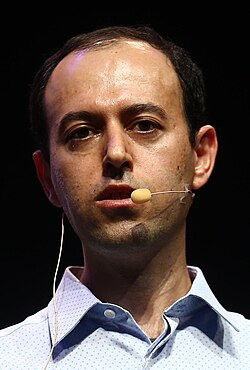

Caucher Birkar کۆچەر بیرکار | |
|---|---|
 Birkar, in 2018 | |
| Born | 1978 (age 47–48) |
| Citizenship | Iran, Britain |
| Alma mater | University of Tehran (BSc) University of Nottingham (PhD) |
| Children | 1 |
| Awards | Leverhulme Prize (2010) Moore Prize (2016) Fields Medal (2018) |
| Scientific career | |
| Fields | |
| Institutions | Tsinghua University University of Cambridge |
| Thesis | Topics in Modern Algebraic Geometry (2004) |
| Website | ymsc |
Caucher Birkar FRS (Kurdish: کۆچەر بیرکار, romanized: Koçer Bîrkar, lit. 'migrant mathematician'; born Fereydoun Derakhshani (Kurdish: فەرەیدوون درەخشانی، Persian: فریدون درخشانی); July 1978) is a UK-based Iranian Kurdish and British mathematician[3] (born in Iran) and a professor at Tsinghua University. He is also an Honorary Professor at the University of Nottingham. [4][5]
Birkar is an important contributor to modern birational geometry.[6] In 2010 he received the Leverhulme Prize in mathematics and statistics for his contributions to algebraic geometry,[7] and in 2016, shared the AMS Moore Prize for the article "Existence of minimal models for varieties of log general type".[8] He was awarded the Fields Medal in 2018, "for his proof of boundedness of Fano varieties and contributions to the minimal model program".[9] In his office at the university, Birkar has two photographs of Alexander Grothendieck, his favorite mathematician, who like Birkar, was a refugee and Fields medalist.[10]
Birkar maintains strong ties to his Kurdish heritage and actively encourages Kurdish identity while also separating it from nationalism and politics. According to Birkar, his strong Kurdish identity is not a part of nationalism nor politics and he is not striving for such achievements.[11] This can be a reflection of his name change to Caucher Birkar which roughly translates into ”the Migrating Mathematician”.
Birkar is a Kurd, born in 1978 in Marivan County, Kurdistan province, Iran, on a subsistence farm, and raised during the Iran-Iraq War.[10] He had five siblings,[10] and learned a lot of mathematics from his brothers during the first years of school.[12][10] Following his graduation from high school,[10] Birkar studied mathematics at the University of Tehran where he received his bachelor's degree. He was awarded the third prize in the International Mathematics Competition for University Students in 2000[13] and, shortly after, while still studying in the university, relocated to the UK as a refugee and asked for political asylum.[14] In 2001–2004 Birkar was a PhD student at the University of Nottingham.[15] In 2003 he was awarded the Cecil King Travel Scholarship by the London Mathematical Society as the most promising PhD student.[16] Upon emigrating to the UK he changed his name to Caucher Birkar, which means "migrant mathematician" in Kurdish.[17]
Together with Paolo Cascini, Christopher Hacon and James McKernan, Birkar settled several conjectures including existence of log flips, finite generation of log canonical rings, and existence of minimal models for varieties of log general type, building upon earlier work of Vyacheslav Shokurov and of Hacon and McKernan.[18]
In the setting of log canonical singularities, he proved existence of log flips along with key cases of the minimal model and abundance conjectures. (This was also proved independently by Hacon and Chenyang Xu.)[19]
In a different direction, he studied the old problem of Iitaka on effectivity of Iitaka fibrations induced by pluri-canonical systems on varieties of non-negative Kodaira dimension. The problem consists of two halves: one related to general fibres of the fibration and one related to the base of the fibration. Birkar and Zhang co-solved the second half of the problem, hence essentially reducing Iitaka's problem to the special case of Kodaira dimension zero.[20]
In more recent work, Birkar studied Fano varieties and singularities of linear systems. He has solved several fundamental problems such as Shokurov's conjecture on boundedness of complements, and the Borisov–Alexeev–Borisov conjecture on boundedness of Fano varieties.[21][22] In 2018, Birkar was given the Fields Medal for his work on Fano varieties and other contributions to the minimal model problem.[9] In a video made available by the Simons Foundation, Birkar expressed hope that his Fields Medal will put "just a little smile on the lips" of the world's estimated 40 million Kurds.[23] Birkar's Fields Medal was stolen on the same day it was awarded to him.[24] In a special ceremony at ICM 2018, Birkar was presented with a replacement medal, leading to quips he was the first person to receive the Fields Medal twice.[25]
Birkar is also active in the field of birational geometry over fields of positive characteristic. His work together with work of Hacon-Xu nearly completes the minimal model program for 3-folds over fields of characteristic at least 7.[26]
In 2021, Birkar joined Tsinghua University as a tenured professor. In 2025, he was elected as a foreign academician of the Chinese Academy of Sciences.[27][28]
Professor Caucher Birkar is an Iranian Kurdish and British mathematician, who won the Fields Medal for his contributions to algebraic geometry in 2018.
{{cite web}}: CS1 maint: others (link)
.jpg){kind=link}